Créditos das imagens
As fotos dos produtos de demonstração vêm do Wikimedia Commons, com licenças livres. Clique no arquivo para ver a página original, o autor e a licença.
| Foto | Arquivo | Autor | Licença |
|---|---|---|---|
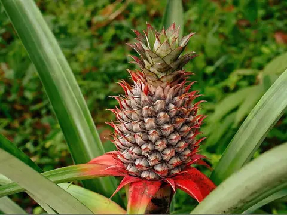 | കൈതച്ചക്ക.jpg | Suniltg at Malayalam Wikipedia | CC BY 3.0 |
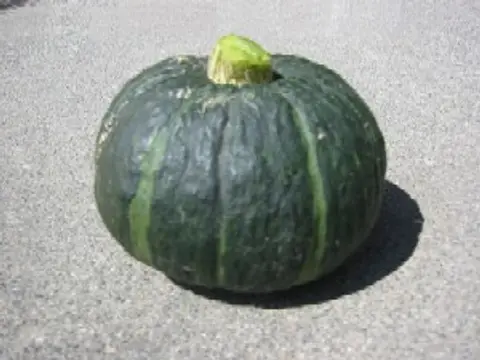 | Kabocha.jpg | Cota | Public domain |
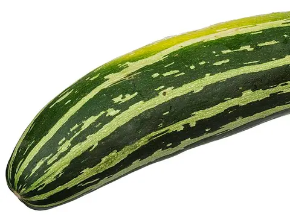 | CSA-Striped-Zucchini.jpg | Evan-Amos | Public domain |
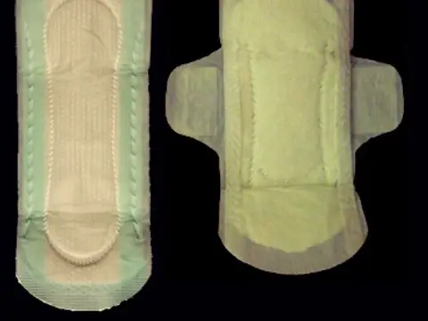 | Sanitary_towel.jpg | desconhecido | CC BY-SA 3.0 |
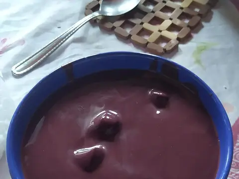 | Açaí_do_Pará.jpg | Túllio F | CC BY-SA 4.0 |
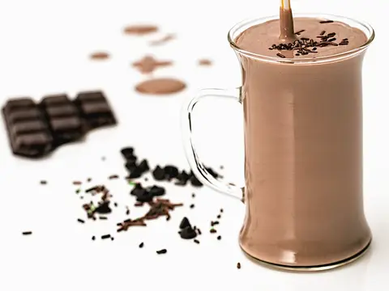 | Chocolate_milk.JPG | stevepb | CC0 |
| Sucre_blanc_cassonade_complet_rapadura.jpg | Romain Behar | Public domain | |
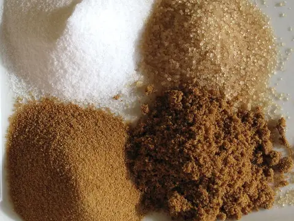 | Sucre_blanc_cassonade_complet_rapadura.jpg | Romain Behar | Public domain |
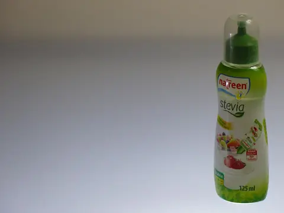 | Stevia, natreen, Madrid, España, 2015.JPG | Benjamín Núñez González | CC BY-SA 4.0 |
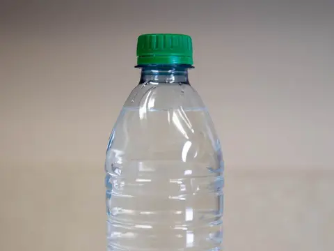 | Water_Bottle_(51308317077).jpg | Alabama Extension | CC0 |
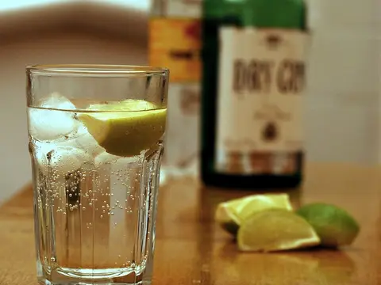 | Gin_and_Tonic_with_ingredients.jpg | NotFromUtrecht | CC BY-SA 3.0 |
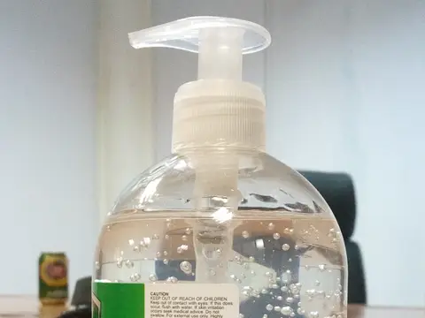 | COVID-19_au_Bénin_flacons_de_gel_hydroalcoolique_sur_une_table1.jpg | Adoscam | CC BY-SA 4.0 |
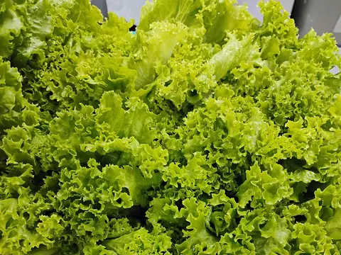 | Lettuce Leaves, Mar 2026.jpg | Ralff Nestor Nacor | CC BY-SA 4.0 |
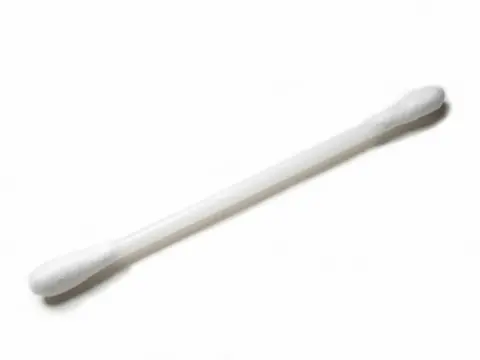 | White_menbo.jpg | Aney | CC BY-SA 3.0 |
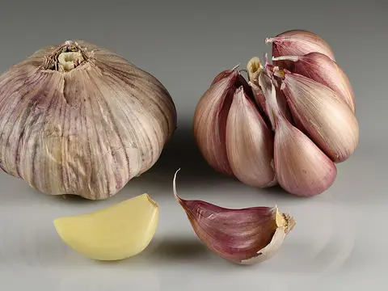 | Garlic bulbs and cloves.jpg | Ivar Leidus | CC BY-SA 4.0 |
| Aluminio.jpg | MdeVicente | CC0 | |
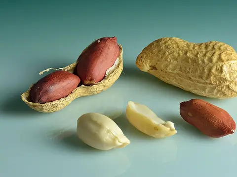 | Peanuts (Arachis hypogaea) - in shell, shell cracked open, shelled, peeled.jpg | Ivar Leidus | CC BY-SA 4.0 |
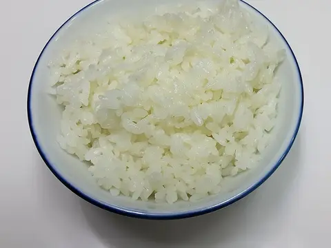 | A bowl of rice.jpg | Douglas Perkins | CC0 |
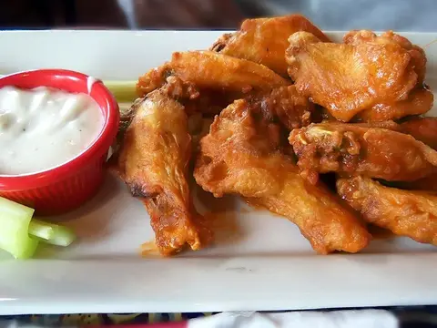 | Buffalo_wings-01.jpg | Clotee Pridgen Allochuku | CC BY 2.0 |
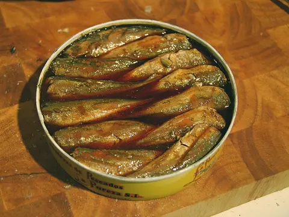 | Chicharros_en_escabeche.jpg | Tamorlan | CC BY-SA 3.0 |
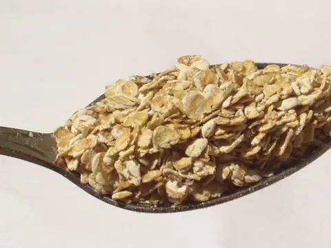 | Rolled_oats.jpg | en:user:Hankwang | Public domain |
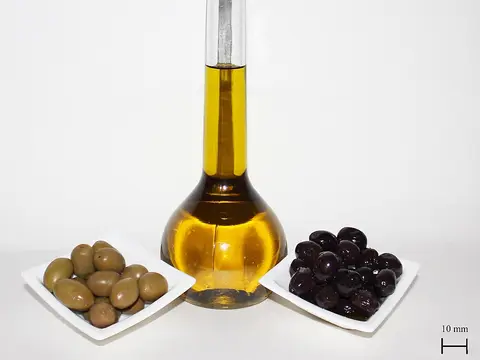 | Oliven_V1.jpg | Poyraz 72 | CC BY-SA 4.0 |
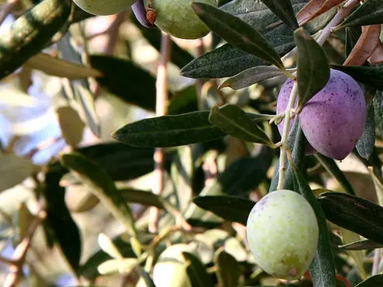 | Olivesfromjordan.jpg | en:User:Nickfraser | CC BY-SA 3.0 |
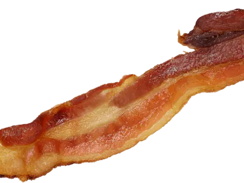 | Made20bacon.png | Made20rder555 | Public domain |
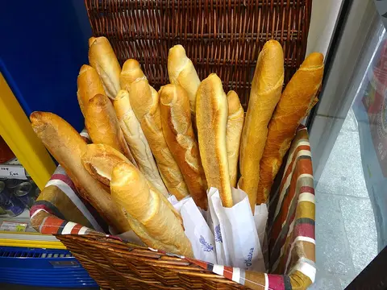 | Baguettes,_Paris,_France_-_panoramio.jpg | Nick Thweatt | CC BY-SA 3.0 |
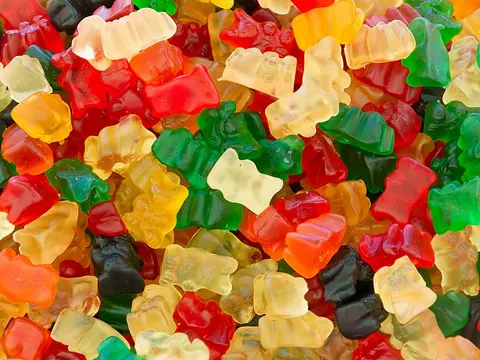 | Oursons_gélatine_marché_Rouffignac.jpg | Jebulon | CC0 |
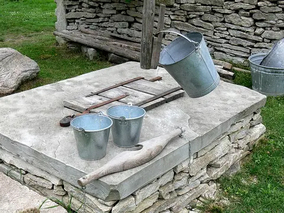 | Gotland-Bottarve_Museumshof_07.jpg | Wolfgang Sauber | CC BY-SA 3.0 |
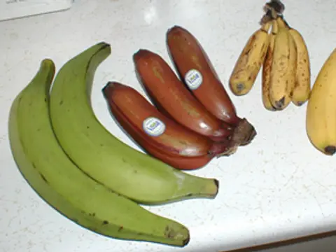 | Bananavarieties.jpg | TimothyPilgrim | CC BY-SA 3.0 |
| Parker-76R_Safety_Razor.jpg | Simon A. Eugster | CC BY-SA 4.0 | |
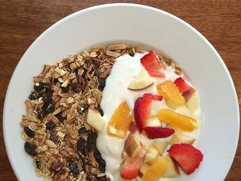 | Granola,_yogurt,_fruit._(16696981528).jpg | Arnold Gatilao from Oakland, CA, USA | CC BY 2.0 |
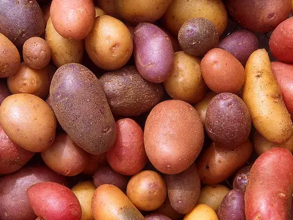 | Patates.jpg | Scott Bauer, USDA ARS | Public domain |
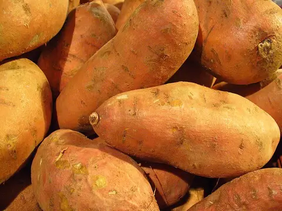 | Ipomoea_batatas_006.JPG | Llez | CC BY-SA 3.0 |
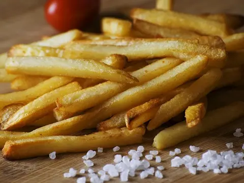 | French_Fries.JPG | StockSnap | CC0 |
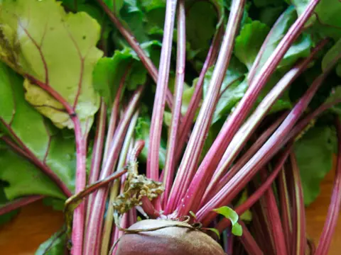 | Detroitdarkredbeets.png | BriannaWalther | CC BY-SA 3.0 |
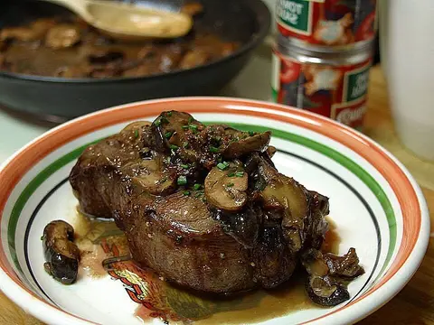 | Steak_with_shitaki_mushrooms.jpg | Jon Sullivan | Public domain |
| Cream_crackers_with_cheese_spread.jpg | AnemoneProjectors | CC BY-SA 2.0 | |
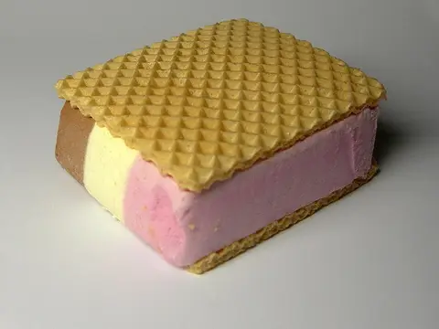 | Pückler-Schnitte.jpg | ~~ | CC BY-SA 3.0 |
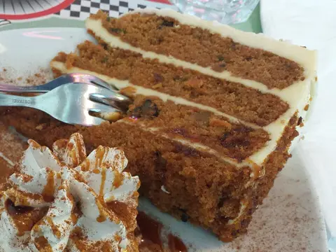 | Carrot_cake_at_America_Graffiti_(cropped).jpg | Elitre | CC BY-SA 4.0 |
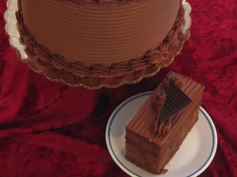 | Chocolate_fudge_cake.jpg | Tracy Hunter from Kabul,, Afghanistan | CC BY 2.0 |
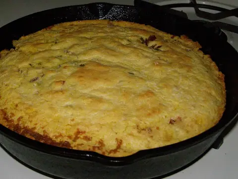 | Skillet_cornbread_(cropped).jpg | Zankopedia | CC BY-SA 3.0 |
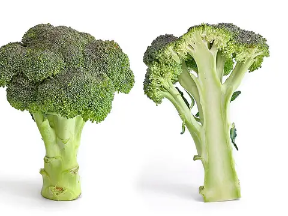 | Broccoli_and_cross_section_edit.jpg | Fir0002 | GFDL 1.2 |
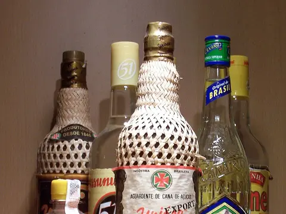 | Cachaca.JPG | Tom Tom at German Wikipedia | CC BY-SA 3.0 |
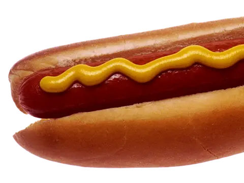 | Hot_dog_with_mustard.png | Czar, original photographed by Renee Comet | Public domain |
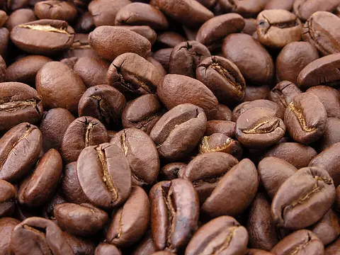 | Roasted_coffee_beans.jpg | MarkSweep | Public domain |
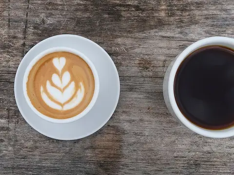 | Latte_and_dark_coffee.jpg | Bex Walton | CC BY 2.0 |
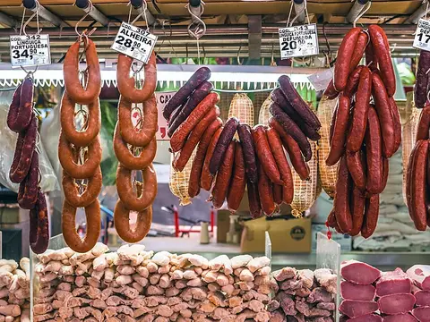 | Mercado_Municipal_(São_Paulo)_05.jpg | Wilfredor | CC BY-SA 4.0 |
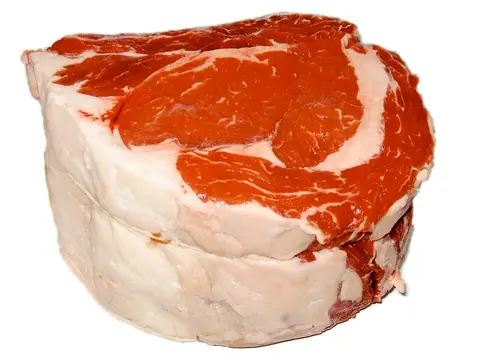 | Standing-rib-roast.jpg | Michael C. Berch, aka MCB at en.wikipedia | CC BY-SA 2.5 |
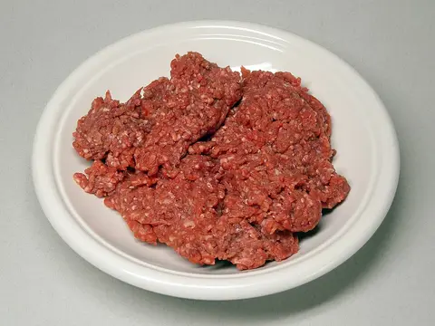 | Hackfleisch-1.jpg | No machine-readable author provided. Rainer Zenz assumed (based on copyright claims). | CC BY-SA 3.0 |
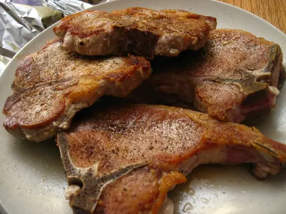 | Pork_chops_167541218.jpg | penny from Oakland, California, USA | CC BY 2.0 |
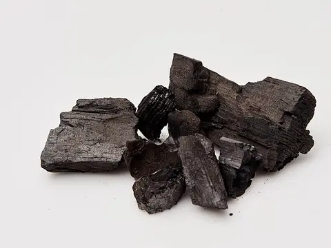 | Charcoal_8.jpg | Dati Bendo, European Commission | CC BY 4.0 |
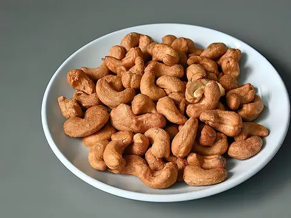 | Roasted Cashew Nuts (52746470588).jpg | Choo Yut Shing from Singapore, Singapore | CC BY 2.0 |
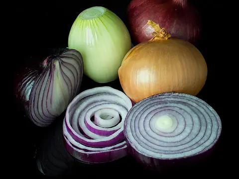 | Mixed_onions.jpg | Colin | CC BY-SA 3.0 |
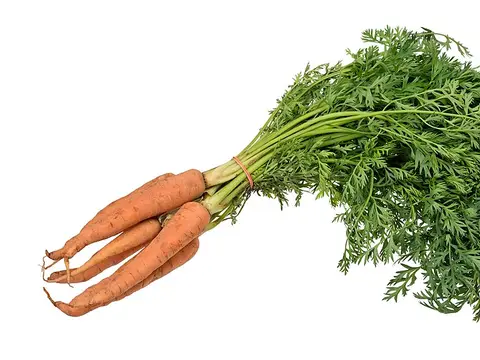 | Vegetable-Carrot-Bundle-wStalks.jpg | Evan-Amos | Public domain |
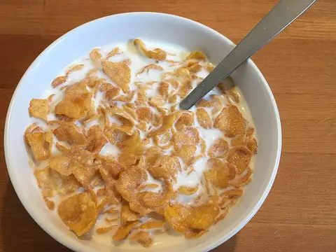 | Kellogg's_Corn_Flakes,_with_milk.jpg | Th78blue | CC BY-SA 4.0 |
| Jeju_beer_09_(cropped).jpg | KOREA.NET - Official page of the Republic of Korea | CC BY 2.0 | |
| Hibiscus_Delight_tisane.jpg | Violette79 from Brooklyn, NY, USA | CC BY 2.0 | |
| Iced_Tea_from_flickr.jpg | Melissa Doroquez | CC BY-SA 2.0 | |
| Petroselinum.jpg | Jonathunder | GFDL 1.2 | |
| Flip_flops.jpg | MICHAEL POPP | CC BY-SA 4.0 | |
| Potato-Chips.jpg | Evan-Amos | Public domain | |
| Green_and_Black's_dark_chocolate_bar_2.jpg | Mx. Granger | CC0 | |
| Chayote_BNC.jpg | Prathyush Thomas | GFDL 1.2 | |
| Coconut halves.JPG | Clockery | CC BY 3.0 | |
| Macro_(4597125928).jpg | Marcelo Braga from São Paulo, Brasil | CC BY 2.0 | |
| 3684Common houseflies eating chicken hearts 02.jpg | Judgefloro | CC0 | |
| Roast Beef Ribs and Quarter Chicken with French Fries from Tony Roma Restaurant- March 2024 01.jpg | Banej | CC BY-SA 4.0 | |
| Balinese_Roasted_Pork_Ribs_-_Iga_Babi_Panggang_Bali.JPG | Gunawan Kartapranata | CC BY-SA 3.0 | |
| Collard-Greens-Bundle.jpg | Evan-Amos | Public domain | |
| Fried-Chicken-Set.jpg | Evan-Amos | CC0 | |
| (2014-11-22)_La_Donosti_-_Agudos_-_Coxinha_de_Leitoa_Romerito_Pontes_(15870107515).jpg | Romerito Pontes from São Carlos | CC BY 2.0 | |
| Toothpasteonbrush.jpg | Thegreenj | CC BY-SA 3.0 | |
| Croissant-Petr_Kratochvil.jpg | Petr Kratochvil | CC0 | |
| Sparadrap_2.jpg | Photograph by Rama | CeCILL | |
| Paper_cup_DS.jpg | Augustus Binu : flickr | CC BY-SA 3.0 | |
| Old_spice_deodorant_body_spray.jpg | Armbrust | Public domain | |
| Afwasmiddel.jpg | M.Minderhoud | CC BY-SA 3.0 | |
| 2024-04-02 Bananada, 01.jpg | Minerva97 | CC0 | |
| DulceDeLeche.jpg | audinou from Paris, France | CC BY 2.0 | |
| 15-09-26-RalfR-WLC-0084.jpg | Ralf Roletschek | CC BY-SA 3.0 | |
| EnergyDrinkBubbles.jpg | OrangeRaver | CC BY-SA 4.0 | |
| Pigs_in_Blankets_(11630904144).jpg | brianfagan from Nottingham, United Kingdom | CC BY 2.0 | |
| Doperwt_rijserwt_peulen_Pisum_sativum.jpg | Rasbak | CC BY-SA 3.0 | |
| Toothbrush_20050716_004.jpg | Jonas Bergsten | Public domain | |
| Sfiha2.jpg | Bazel | Public domain | |
| Spaghettoni.jpg | Nnaluci | CC BY-SA 3.0 | |
| Spices1.jpg | Photo taken by Bertrand Devouard | CC BY-SA 3.0 | |
| Éponge_type_3_(1).jpg | Lionel Allorge | CC BY-SA 3.0 | |
| Glass_of_champagne.jpg | bgvjpe | CC BY 2.0 | |
| Soy_powder.jpg | Tiia Monto | CC BY-SA 3.0 | |
| Farofa_brazil.jpg | User Carioca | CC BY-SA 3.0 | |
| Pinto_Beans_Seeds.jpg | Sanjay Acharya | CC BY-SA 4.0 | |
| Black_beans_(1126927794).jpg | Father.Jack from Coventry, UK | CC BY 2.0 | |
| Pig's_liver_with_sauteed_onion.jpg | FotoosVanRobin from Netherlands | CC BY-SA 2.0 | |
| Die_Chemex_6_Cup.jpg | Coffee Circle from Berlin, Deutschland | CC BY 2.0 | |
| Sticky_tape.jpg | André Karwath aka Aka | CC BY-SA 2.5 | |
| Friction_d'une_allumette.jpg | Yann SEGALEN | CC BY-SA 4.0 | |
| Disposablediaper.JPG | Coop41 | Public domain | |
| Whole raw chicken - Japan Dec 22 2019.jpeg | Nesnad | CC BY 4.0 | |
| Polenta_uncooked.jpg | Popo le Chien | CC BY-SA 3.0 | |
| Clickon_Water_Dispenser.jpg | Kskhh | CC BY-SA 4.0 | |
| Thermos.JPG | Denae Bedard | CC BY-SA 3.0 | |
| LPG cylinder connector VB03 Guyana.jpg | Jan van Bekkum | CC BY-SA 4.0 | |
| Rainbow-Jello-Cut-2004-Jul-30.jpg | desconhecido | CC BY-SA 2.5 | |
| Fruits_jam_variants.jpg | 毒島みるく | CC0 | |
| Ice_cubes_openphoto.jpg | Darren Hester | CC BY-SA 2.5 | |
| Fresh ginger rhizome 01.jpg | Friday musa | CC BY-SA 4.0 | |
| Guava_pink_fruit.jpg | Ivar Leidus | CC BY-SA 4.0 | |
| Goiabada_slice.jpg | Voton | CC BY-SA 3.0 | |
| Ordinary chickpeas in a ceramic bowl.jpg | AlixSaz | CC BY-SA 4.0 | |
| RedDot_Burger.jpg | Hongreddotbrewhouse | CC BY-SA 3.0 | |
| White_Petrolatum1.jpg | Kiyok | CC BY-SA 3.0 | |
| Mosquito_coil.JPG | مانفی | CC BY-SA 3.0 | |
| Joghurt.jpg | No machine-readable author provided. Rainer Zenz assumed (based on copyright claims). | CC BY-SA 3.0 | |
| Styrofoam Coolers (9431862366).jpg | Paul Sableman from St. Louis, MO | CC BY 2.0 | |
| Solanum aethiopicum at market Arusha.JPG | Michael Hermann | CC BY-SA 3.0 | |
| Ketchup_20160918_181342_(cropped).jpg | Kim Holger Kelting | CC BY 4.0 | |
| Kibbeh3.jpg | Bazel | CC BY-SA 3.0 | |
| Led-lampa.jpg | Zátonyi Sándor, (ifj.) Fizped | CC BY 3.0 | |
| Oranges_-_whole-halved-segment.jpg | Ivar Leidus | CC BY-SA 4.0 | |
| Pralni_prašek.JPG | Uncy at Slovenian Wikipedia | Public domain | |
| Marketvegetables.jpg | Jasper Greek Golangco | Copyrighted free use | |
| Glass_of_Milk_(33657535532).jpg | NIAID | CC BY 2.0 | |
| Cononut_milk.JPG | S Sepp | CC BY-SA 3.0 | |
| 3_types_of_lentil.png | User:Justinc | CC BY-SA 2.5 | |
| Starr-140117-3997-Citrus_latifolia-Tahitian_fruit_and_leaves-Hawea_Pl_Olinda-Maui_(24612312943).jpg | Forest and Kim Starr | CC BY 3.0 us | |
| Vacuum_Clean.jpg | ebrunar | CC BY 2.0 | |
| Linguicabrazil.jpg | Camila e Sérgio Paganini Staut | CC BY 2.0 | |
| Bay_Leaves.JPG | Miansari66 | Public domain | |
| Gloves Of The Beekeeper (Unsplash).jpg | Roman Kraft romankraft | CC0 | |
| Pink_lady_and_cross_section.jpg | fir0002 flagstaffotos [at] gmail.com Canon 20D + Sigma 150mm f/2.8 | GFDL 1.2 | |
| Pennelisce_closeup.png | Popo le Chien | CC0 | |
| Mayonnaise_(1).jpg | jules | CC BY 2.0 | |
| Papaya cut half.jpg | Maksym Kozlenko | CC BY-SA 4.0 | |
| Harvested cassava roots 06.jpg | Denis kasozi | CC BY-SA 4.0 | |
| Mangos_-_single_and_halved.jpg | Ivar Leidus | CC BY-SA 4.0 | |
| Švédský_koláč_naruby_904_(cropped).JPG | Matěj Baťha | CC BY-SA 3.0 | |
| Cut and uncut passion fruits.jpg | Nana Pearls | CC0 | |
| Runny_hunny.jpg | Scott Bauer, USDA ARS | Public domain | |
| Taiwan_2009_Tainan_City_Organic_Farm_Watermelon_FRD_7962.jpg | Fred Hsu (Wikipedia:User:Fred Hsu on en.wikipedia) | CC BY-SA 3.0 | |
| CookedCornOnTheCob.JPG | Jonathunder | CC BY-SA 3.0 | |
| Mama_instant_noodle_block.jpg | Takeaway | CC BY-SA 3.0 | |
| Gizzard_of_Chicken.JPG | Bjferstern | CC BY-SA 3.0 | |
| Fermented_hot_sauce.jpg | Veganbaking.net from USA | CC BY-SA 2.0 | |
| Fresh_Tomato_Sauce_(Unsplash).jpg | Dennis Klein klein2 | CC0 | |
| Mortadella_tagliata.jpg | desconhecido | CC BY-SA 3.0 | |
| Mustard.JPG | fuji01 | CC0 | |
| Mozzarella_di_bufala3.jpg | Popo le Chien | CC BY-SA 3.0 | |
| Chicken_Nuggets.jpg | James Palinsad | CC BY-SA 2.0 | |
| Soybean_Oil_(10059657806).jpg | United Soybean Board | CC BY 2.0 | |
| Oregano dried.JPG | Miansari66 | Public domain | |
| Huevo_frito.jpg | Horacio Cambeiro | CC BY-SA 4.0 | |
| Paçoca grande.jpg | Márcia Cristina Machado | CC BY-SA 4.0 | |
| Heart_of_palm.jpg | mhoenig | CC BY-SA 3.0 | |
| Dishcloths.jpg | anna saccheri from Palo Alto, United States | CC BY-SA 2.0 | |
| Market_Bread,_Riga,_Latvia.jpg | Ken Eckert | CC BY-SA 4.0 | |
| Homemade_potato_bread,_half.jpg | Daniel J. Layton | CC BY-SA 3.0 | |
| Fresh_made_bread_05.jpg | FranHogan | CC BY-SA 4.0 | |
| Cheesebread.jpg | Murilo manzini | CC BY-SA 4.0 | |
| Chelsea_Buns.jpg | kochtopf | CC BY-SA 2.0 | |
| Pao_frances.jpg | Roosewelt Pinheiro/ABr | CC BY 3.0 br | |
| Vegan_no-knead_whole_wheat_bread_loaf,_September_2010.jpg | Veganbaking.net | CC BY-SA 2.0 | |
| Pita_Bread.jpg | Azure Dragon of the East | CC BY-SA 3.0 | |
| Toiletpapier_(Gobran111).jpg | Brandon Blinkenberg | CC BY 2.5 | |
| Paper_towel.jpg | Santeri Viinamäki | CC BY-SA 4.0 | |
| Parmigiano_Reggiano,_Italien,_Europäische_Union.jpg | Naturpuur | CC BY-SA 4.0 | |
| Pe_de_moleque.jpg | No machine-readable author provided. Meksyk~commonswiki assumed (based on copyright claims). | Public domain | |
| Raw chicken slices.jpg | kakyusei | CC0 | |
| Pangasius_meat.jpg | Brücke-Osteuropa | CC0 | |
| ARS_cucumber.jpg | Stephen Ausmus, USDA ARS | Public domain | |
| Picanha3.jpg | desconhecido | Public domain | |
| Cucumber,_elderflower_and_mint_ice_pop_from_Nicepops_(18159920902).jpg | Ruth Hartnup from Vancouver, Canada | CC BY 2.0 | |
| AA_matchstick-1.jpg | Lead holder | CC BY-SA 3.0 | |
| Madame_Jeanette_and_other_chillies.jpg | Takeaway | CC BY-SA 4.0 | |
| Tellicherry Black Peppercorns.jpg | Misterneedlemouse | CC0 | |
| Green-Yellow-Red-Pepper-2009.jpg | Kham Tran - www.khamtran.com | CC BY-SA 3.0 | |
| Popcorn_-_Studio_-_2011.jpg | Bill Ebbesen | CC BY-SA 3.0 | |
| Pizza-3007395.jpg | igorovsyannykov | CC0 | |
| Malpighia glabra blossom and fruit.jpg | Eric Gaba (Sting - fr:Sting) | CC BY-SA 3.0 | |
| Biscoito_de_Polvilho.jpg | Alex Braha Stoll | CC0 | |
| Tepung_casava.jpg | 36Lilis | Public domain | |
| Ham_(4).jpg | Renee Comet (Photographer) | Public domain | |
| Queijo_coalho.jpg | Thiago Parente Lima | CC BY-SA 3.0 | |
| Queijo_Minas_Frescal.JPG | The original uploader was Hellkt at German Wikipedia. (Original text: de:Benutzer:Hellkt) | Public domain | |
| Danbo_Cheese.jpg | desconhecido | Public domain | |
| Bucket of raw okra pods.jpg | Bill Tarpenning | Public domain | |
| Dog_food_in_a_bowl.jpg | James Redekop | CC BY-SA 2.0 | |
| Gastrointestinal_Haiball_cat_dry_food_(Royal_Canin).jpg | GF38storic | CC BY-SA 4.0 | |
| Tumbler_of_cola_with_ice.jpg | Simon Cousins from High Wycombe, England | CC BY 2.0 | |
| Glass_of_Cola.jpg | Cocktailmarler | CC BY-SA 4.0 | |
| Cabbage_and_cross_section_on_white.jpg | fir0002 flagstaffotos [at] gmail.com Canon 20D + Sigma 150mm f/2.8 | GFDL 1.2 | |
| Cream crackers with cheese spread.jpg | AnemoneProjectors | CC BY-SA 2.0 | |
| Salad of Poached Chicken with Avocado, Rocket Peach and Radish (67408669).jpg | Alpha from Melbourne, Australia | CC BY-SA 2.0 | |
| Handmade_soap_cropped_and_simplified.jpg | Malene Thyssen, simplified by HLHJ | CC BY 2.5 | |
| Dumped bags of soft drink can garbage Bishopsgate London England.jpg | Acabashi | CC BY-SA 4.0 | |
| Blue_reusable_shopping_bag.JPG | TooHotToHandle at English Wikipedia | CC BY-SA 3.0 | |
| Rock_salt_(halitite)_(Billianwala_Salt_Member,_Salt_Range_Formation,_Ediacaran_to_Lower_Cambrian;_Khewra_Salt_Mine,_Salt_Range,_Pakistan)_14.jpg | James St. John | CC BY 2.0 | |
| Salame_di_Sauris.jpg | Petar43 | CC BY-SA 4.0 | |
| 2006 sardines can open.jpg | Rl | CC BY-SA 3.0 | |
| Semillas de Chía.jpg | Magister Mathematicae | CC BY-SA 3.0 | |
| Soy_sauce_2.jpg | 국립국어원 | CC BY-SA 2.0 kr | |
| Berliner-Pfannkuchen.jpg | User Rainer Zenz on de.wikipedia | CC BY-SA 3.0 | |
| Vanilla_Ice_Cream_Cone_at_Camp_Manitoulin.jpg | Steven Depolo | CC BY 2.0 | |
| Orangejuice.jpg | rawpixel.com | CC0 | |
| Mbeyú_paraguayo.jpg | Overkill53 | CC BY-SA 4.0 | |
| Achiote_paste_ingredients.jpg | Paul Goyette | CC BY-SA 2.0 | |
| Zusammengelegte_Handtücher.jpg | User:Mattes | Public domain | |
| Tomato_je.jpg | Softeis | CC BY-SA 3.0 | |
| Zwieback-1.jpg | No machine-readable author provided. Rainer Zenz assumed (based on copyright claims). | CC BY-SA 3.0 | |
| Grapes,_Rostov-on-Don,_Russia.jpg | Vyacheslav Argenberg | CC BY 4.0 | |
| Raisins_01.jpg | Paweł Kuźniar (Jojo_1, Jojo) | CC BY-SA 3.0 | |
| Clothes_pegs_2016-05-25_02.jpg | Santeri Viinamäki | CC BY-SA 4.0 | |
| BroomsforSale.jpg | Edal Anton Lefterov | CC BY-SA 3.0 | |
| LA2_Skultuna_kontorsljusstake.jpg | LA2 | CC BY-SA 3.0 | |
| Apple Cider Vinegar (4108653248).jpg | Veganbaking.net from USA | CC BY-SA 2.0 | |
| Red_Wine_Glass.jpg | André Karwath aka Aka | CC BY-SA 3.0 | |
| User measures a scoop of protein powder from a container in a kitchen.jpg | Shixart1985 | CC BY 2.0 | |
| Whiskyhogmanay2010.jpg | Guinnog | CC BY-SA 3.0 | |
| Hair_wash_with_shampoo.jpg | thejbird | CC BY 2.0 |